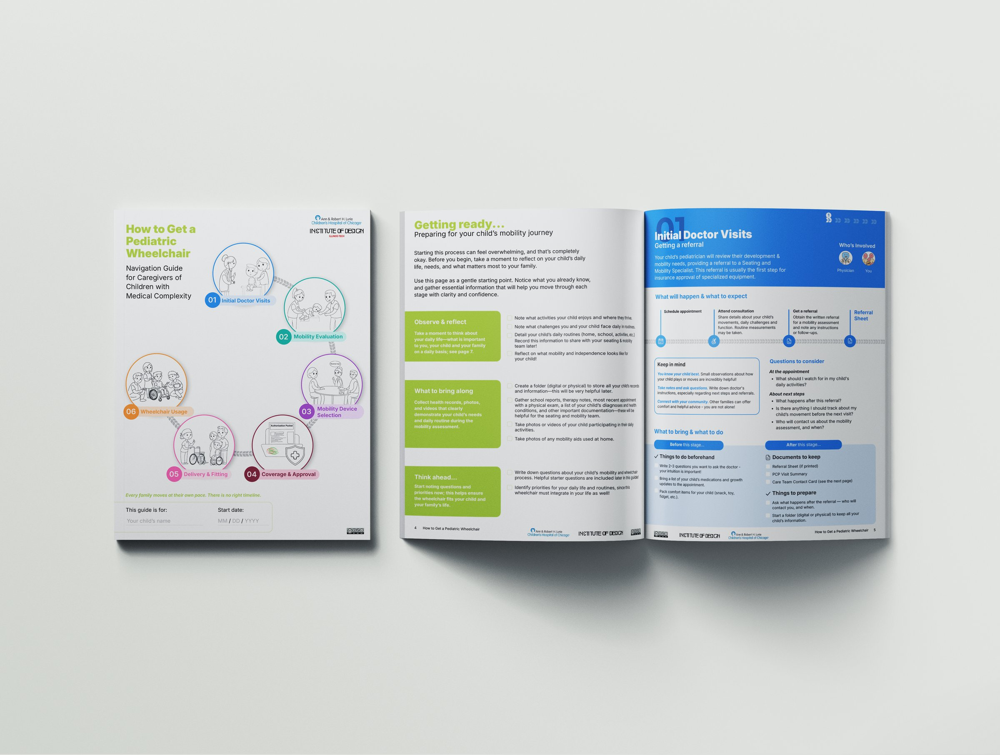
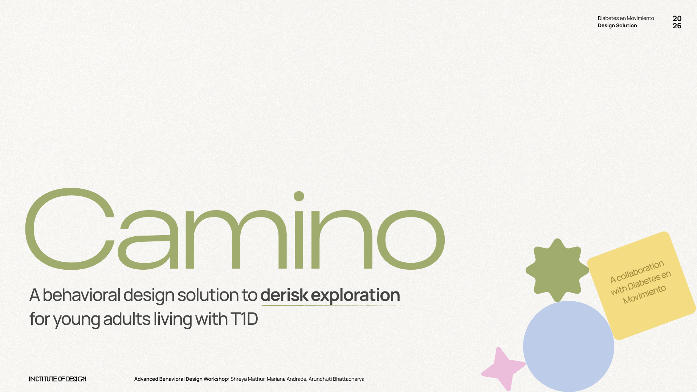

Selected Work
A curated selection of projects highlighting my approach to creative problem-solving and UX research and design.

Problem
Acquiring a wheelchair is a complex and opaque process that requires significant emotional and logistical labor to navigate.
Solution
A comprehensive end-to-end navigation guide co-designed involving 10+ stakeholders including medical profressionals and caregivers.
Impact
Empowered caregivers with critical Information to predict and prepare for potential delays. On-going user testing and feedback with project partners.
Navigation Guide for Pediatric Wheelchair Acquisition
The wheelchair acquisition journey is complex and emotionally demanding. Yet families receive little structured guidance on how to navigate this system.
Approaching this as an information designer meant asking:
How might we bring clarity, structure, and support to an experience that currently feels overwhelming?

Problem
Our research revealed that the Director of CX and outcomes at Miller Industrial was spending majority of her time on manual data wrangling instead. The result was a team operating on instinct rather than insight, leaving little capacity for the relationship-building the role was actually designed for.
Solution
We envisioned what a CRM with AI capabilities tailored to Miller's established systemic context could look like. We mapped its features and value across five key stages of the customer lifecycle intertwined with the director's experience journey.
Impact
A smarter, more intentional approach to customer growth by connecting the Director's operational gaps directly to moments in the customer experience. Miller Industrial was able to envision a concrete future doing what they do best: build relationships but at scale.
Connecting CRM capabilities to real customer outcomes
Miller Industrial is an industrial supply company in Elk Grove Village in Chicago. They have a deeply relationship-driven business model with great hyper-local presence, offering a rare retail-style experience for commercial clients at the heart of a dense corridor of small to mid-sized manufacturers.
Miller's edge has always been personal however the lack of formal infrastructure to support and expand their growth is hindering them from achieving the 'people-first' approach they want to incorporate.

Problem
Responding to RFPs is a highly manual, time consuming process with dismal win rates due to fragmented workflows.
Solution
A domain-adaptive AI platform that securely analyzes past proposals, generates actionable drafts, and orchestrates a collaborative review workflow.
Impact
10 fold improved efficiency, cutting down time from receiving a RFP to finalizng a draft to bidding, and increases the overall probability of proposal success.
AiFP: AI-Powered RFP Automation
A native AI platform designed for the construction industry that streamlines the complex Request for Proposal (RFP) workflow by generating drafts based on historically winning data.

Problem
Young adults with T1D face a tradeoffs problem — choosing between condition management and life experiences during critical transitions.
Solution
An AI-integrated tool mapping each user's behavioral risk profile across 8 dimensions and 7 archetypes to deliver personalized strategies.
Impact
Enables Diabetes en Movimiento to provide evidence-based, individualized mentorship — moving from intuition to insight at scale.
Camino: Derisking Exploration for Young Adults with T1D
In collaboration with Diabetes en Movimiento, a Latin American health organization, we designed Camino — a behavioral design solution for the ~160,000 young adults with Type 1 Diabetes navigating life transitions in South and Central America.
The project synthesized 5 research insights, 8 behavioral dimensions, and 7 user archetypes into a dual-surface product: a personalized report for users and a clinical dashboard for counselors.